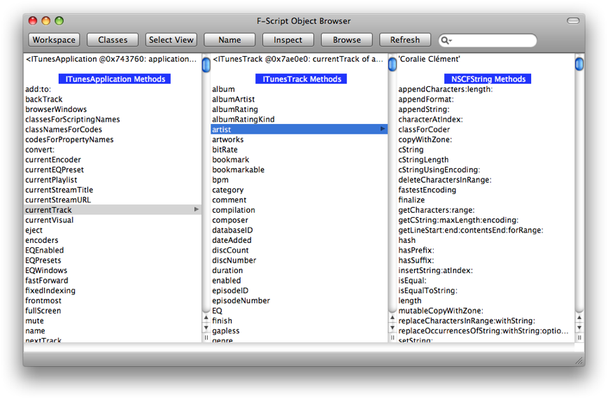
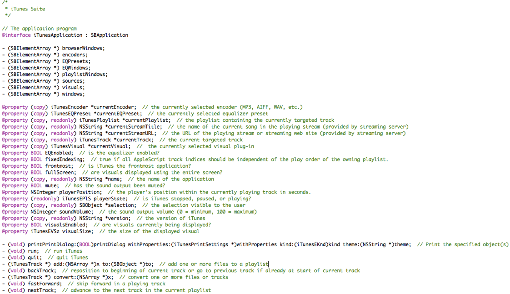

2009年 9月 改訂
F-Script は、AppleScript の様に、スクリプタブルアプリケーションと交信することができ、そのアプリケーションを使った作業プロセスを自動化したり、複数のアプリケーションを跨いだ ワークフローを創ったりすることができる。 このシステム-ワイドなスクリプティング能力は、Mac OS X の標準的な技術の一つを使って実現されているが、この技術は スクリプティングブリッジと呼ばれる：
スクリプティングブリッジとは、Cocoa 開発者が、スクリプタブルアプリケーションを制御したり、それらと交信したりするのを、非常に容易にしてくれるフレームワークであり、技術である。 [...] スクリプティングブリッジフレームワークを使えば、AppleScript のコマンドや、Apple-Event 記述子の代わりに、Objective-C のメッセージを使って、Apple-Event の送受信をすることができる。 スクリプティングブリッジは、Cocoa プログラマに対して、スクリプタブルアプリケーションを制御する為の、易しくて明快なモデルを提供してくれる。 これを使えば、Cocoa プログラマは、より効率的に Apple-Event を送受信でき、しかも、ターゲットアプリケーションの Apple-Event モデルがどうなっているのかに関する詳しい知識を持っている必要がない。 スクリプティングブリッジは、既存の Objective-C コードをうまく統合し、キー値-コーディング、ターゲット-アクション、それに、デクレアド-プロパティの様な、標準的な Cocoa の設計と連携して機能する。
基本的に、交信の詳細（つまり、Apple-Event の生成や送信）は自動的に処理される為、スクリプティングブリッジを使うと、スクリプタブルアプリケーションを、まるでそれらが Cocoa オブジェクトであるかのように 操作できるようになる。 こうして、F-Script を使えば、標準的なスクリプティングインタフェースを通して他のアプリケーションを操作することができるのである。
注：Apple-Event 等、AppleScript についての知識を補うには、William R.Cook が HOPL III コンファレンス の為に書いた AppleScript を読んでみると良い。 これは、ユニークな歴史的視野を与えてくれる、非常に良い読み物の一つである。
では、F-Script でスクリプティングブリッジを使うにはどうすれば良いのだろう？まず、Cocoa が提供する SBApplication クラスを使って、 アプリケーションに接続する。 例えば、こうすれば iTune に接続することができる：
iTunes := SBApplication applicationWithBundleIdentifier:'com.apple.iTunes'
iTunes currentTrack name
iTunes nextTrack
Finder := SBApplication applicationWithBundleIdentifier:'com.apple.finder'.
Finder desktop files name
Finder desktop files name inspect
files := Finder desktop files.
files name where:files modificationDate >= 'today' asDate
As you see, we can make use of F-Script's array programming model as usual.
In the following example, we ask the Finder for the number of files in the Applications folder on the startup disk:
(Finder startupDisk folders objectWithName:'Applications') files count
In the following example, we connect to Mail and ask for the subjects of the messages that are currently in our inbox and to which we have already replied:
Mail := SBApplication applicationWithBundleIdentifier:'com.apple.mail'.
Mail inbox messages subject where:Mail inbox messages wasRepliedTo
The following script is based on a example in the Scripting Bridge Programming Guide for Cocoa. It plays the currently selected iTunes track (if the application is running) and then modulates the volume of the sound, eventually restoring it to the original level.
iTunes := SBApplication applicationWithBundleIdentifier:'com.apple.iTunes'.
iTunes isRunning ifTrue:
[
|rampVolume originalVolume|
originalVolume := iTunes soundVolume.
iTunes setSoundVolume:0; pause; playpause.
rampVolume := 0.
[rampVolume < originalVolume] whileTrue:
[
iTunes setSoundVolume:rampVolume.
"Pause 1/10th of a second between adjustments"
NSThread sleepUntilDate:(NSDate dateWithTimeIntervalSinceNow:0.1).
rampVolume := rampVolume + (originalVolume / 32).
].
iTunes setSoundVolume:originalVolume.
]
The following script is also based on a example in the Scripting Bridge Programming Guide for Cocoa. It copies the textual content of each selected Mail message to a TextEdit document.
TextEdit := SBApplication applicationWithBundleIdentifier:'com.apple.TextEdit'.
Mail := SBApplication applicationWithBundleIdentifier:'com.apple.Mail'.
Mail messageViewers do:[:viewer|
viewer selectedMessages do:[:message|
doc := (TextEdit classForScriptingClass:'document') alloc init.
TextEdit documents addObject:doc.
doc setText:message content get.
]
]
Each application has its own specific scripting interface. The F-Script object browser comes in handy for exploring and experimenting with the available methods for a particular application. If we have already established a connection with an application, we can open the object browser programmatically, passing it the object representing the application, as in the following example:
sys browse:iTunes
Alternatively, we can establish the connection right from the object browser itself, by following these steps:
SBApplication class. This displays the class methods of SBApplication.applicationWithBundleIdentifier:
method and provide the required argument (i.e., a string containing the
identifier of the application you want to connect to); for example,
enter 'com.apple.iTunes'.We can then use the object browser to explore and experiment with the scripting interface of the application.
As shown in the screenshot, the browser displays the methods of the Cocoa object automatically created by the Scripting Bridge to represent the iTunes application. To invoke a particular method, all we have to do is to click on it (the browser will asks for arguments if needed). Once the method returns, the result is displayed in a new column in the browser and we can further manipulate it. The object browser provides a lot of features to help exploring and navigating objects. You'll find a detailed tutorial in Exploring Cocoa with F-Script.
To get more information about the scripting interface of an
application, we can generate an Objective-C interface file (that is, a
.h file) that describes the application scripting interface. This is
done by using together the sdef (scripting definition extractor) and sdp (scripting definition processor) commands provided by Mac OS X . We first use sdef to asks an application for its scripting definition, and we then pass this definition to sdp
to produce an Objectice-C interface file. For example, to get a
detailed description of how iTunes can be controlled with the Scripting
Bridge, we can execute the following command in a UNIX shell:
sdef /Applications/iTunes.app | sdp -fh --basename "iTunes"
This will create a file named iTunes.h. Here is a short extract of this file, as displayed by Xcode:
The sdp command might not work well with some applications. In such cases, looking at the output of sdef can still provide useful information about an application interface.
Combining information we get using sdef and sdp
with interactive exprimentation, we can learn how to control an
application from F-Script (as well as from Objective-C) and hopefully
write cool scripts.
Happy scripting!
Copyright © 2009 Philippe Mougin